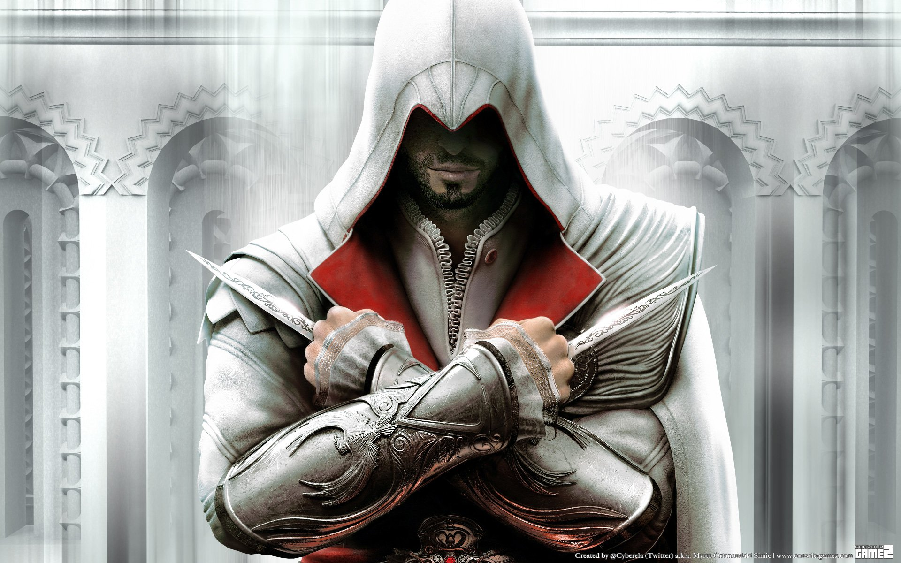

Assassin's Creed
Historia
La Hermandad de los Asesinos en Assassins's Creed es una organizacion secreta que lucha por la libertad y el libre albedrio, oponiendose a los Templarios, quienes buscan el control absoluto de la humanidad
Desde su fundacion, los Asesinos han defendido la libertad individual y han trabajado en las sombras para eliminar figuras clave que amenazan el libre albedrio. Su legado se ah extendido por distintas civilizaciones a cada epoca de la region, desde los tiempos de Egipto hasta la moderna
Origenes, Metodos y Filosofia
- Inspirada en la historica Orden de los Nizaríes, una secta islamica del siglo XI.
- Su lema es "Nada es verdad, todo está permitido", lo que refleja su creencia en la autonomía individual y la ruptura de las normas impuestas.
- Operan desde las sombras, eliminando figuras clave que amenazan la libertad.
- No tienen una Jerarquía rígida como los templarios; cada miembro actua con independencia dentro de la hermandad
- Utilizan el sigilo, el parkour y el combate cuerpo a cuerpo para cumplir sus misiones
- Se entrenan en el uso de la Hoja oculta, su arma disintiva de la hermandad
Asesinos Notables
| Altaïr Ibn-La'Ahad (AC1) | Reformó la Hermandad y escribió el Codex con nuevas técnicas de combate. |

|
|---|---|---|
| Ezio Auditore (AC2 - AC Revelations) | Expandió la Hermandad por Europa y luchó contra los Borgia. |  |
| Connor Kenway (AC3) | Defendió la causa de los Asesinos durante la Revolución Americana. | |
| Bayek de Siwa (AC Origins) | Fundador de la Orden de los Ocultos, precursora de la Hermandad. |